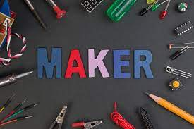

Robótica e Cultura Maker
Esse site é sobre a cultura maker, nele focarei em introduzir aos iniciantes noções básicas e alguns projetos legais em diferentes programas.
Explore e curta o site
O que é cultura maker?
A cultura maker se baseia na ideia de que as pessoas devem ser capazes de fabricar, construir, reparar e alterar objetos dos mais variados tipos e com diversas funções. Maker é uma palavra em inglês que significa fazedor, no sentido de criador, realizador, fabricante.